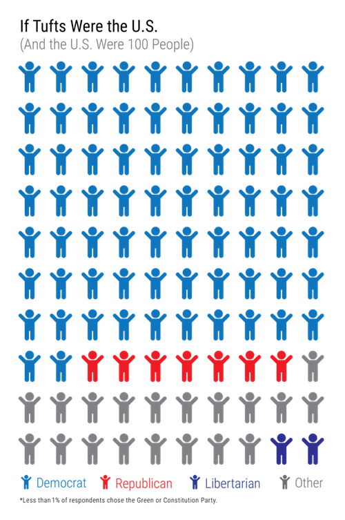
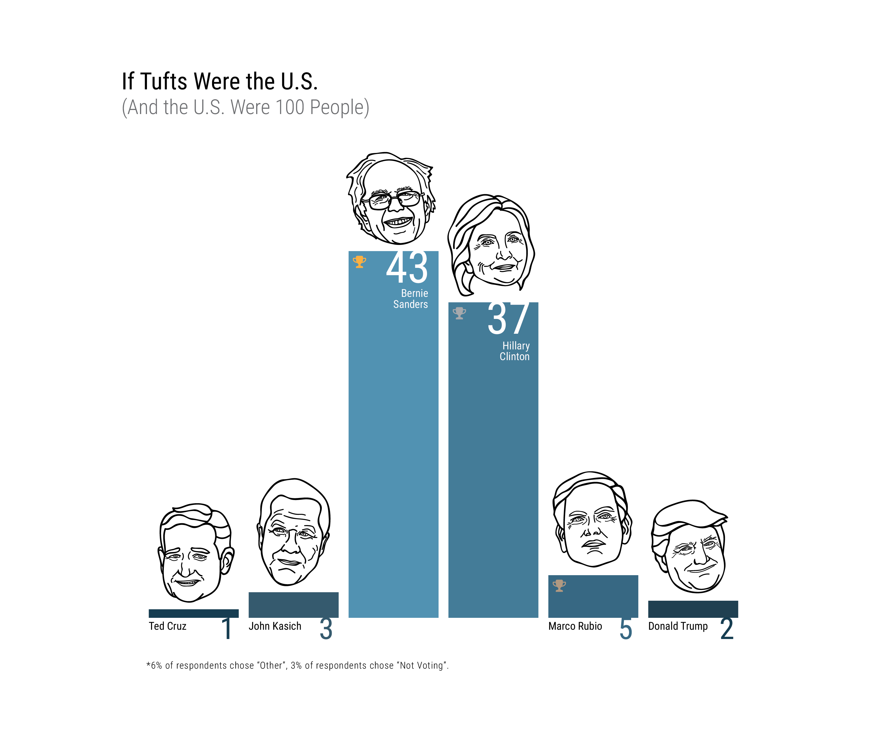
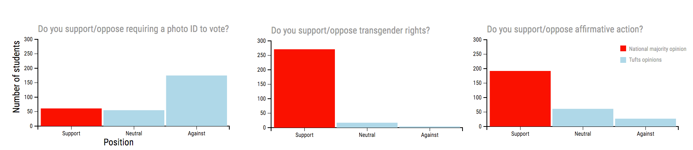
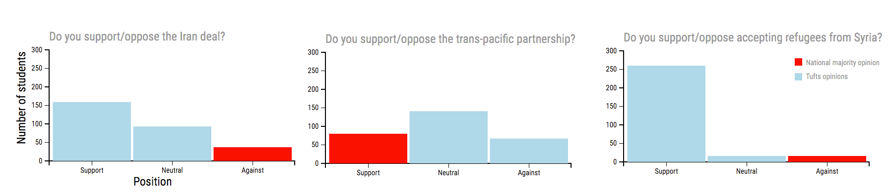
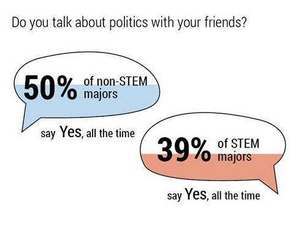
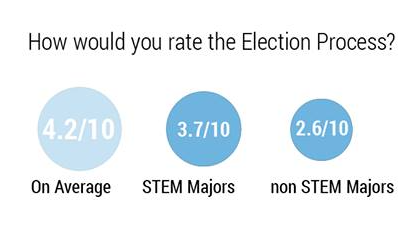

Dean of Jonathan M. Tisch College of Civic Life Alan Solomont may as well have coined the term “civic life” at Tufts, as it relates to millennials and students in higher education. It’s a phrase that encompasses students engaging on a daily basis in political issues such as discourse and participation in voting, non-profit work and public service. Recently, the $15 million donation from Tufts Co-Chairman of the Board of Trustee Jonathan Tisch (A ’76) shows Tisch College’s continued commitment to civic activity.
This endowment comes at the crucial time where a study from the Tisch College Center for Information and Research on Civic Learning and Engagement (CIRCLE) shows that young people from the ages of 18-29 have a pivotal role in determining the outcome of the 2016 presidential elections and have shown much better turnout rates during the primaries in general.
To gauge the political climate at Tufts in the midst of the current presidential primaries, the Daily and the Tufts Independent Data Journal (Enigma) sent out a survey to the student body. The survey opened on March 1 — Super Tuesday — and closed on the following Sunday, March 6, allowing people to respond for a total of five days. The survey received a total of 294 responses from both the School of Arts and Sciences and the School of Engineering.
Party alignments and elections
In terms of party affiliations, the survey results show that 72 percent of Tufts students align themselves with the Democratic party, while seven percent with the Republican party, two percent with the Libertarian party and 19 percent are Independent voters.

This is different from a recent Gallup poll from January 2016, wherein on average 43 percent of the United States identified themselves as Independent, 30 percent Democrat and 26 percent Republican.
However, in terms of the 2016 presidential election, while the “RealClearPolitics” polls show that Clinton is barely ahead of Sanders in the Democratic primary and Trump is dominating the GOP primary, the survey results tell a different story.
The survey results show that both Senator Bernie Sanders (I-VT) and Hillary Clinton, former Secretary of State, are strongly favored by Tufts students, each receiving 43 percent and 37 percent, respectively, of the total votes of the survey. While Sanders defeats Clinton and wins the Democratic nomination, among Republicans, Marco Rubio would win the GOP nomination (the survey was released before he suspended his presidential campaign). The results also reveal that Sanders would become our next President, if all candidates from both the GOP and the Democrat compete in the general election.

Political issues and social topics
Regarding social justice topics or systemic equality issues, Tufts students have a firm and mostly unanimous stance, which is unsurprisingly further left than the general population.
According to a March report from the Williams Institute, recent U.S. political trends support all LGBT rights, despite North Carolina passing a controversial anti-trans bill that requires all people to use bathrooms that match their birth sex, regardless of their present gender identity. When the Jumbos were asked whether or not they support transgender rights, the survey shows near unanimous support of 92 percent.
Other equality-related topics, such as affirmative action programs and minimum wage increases, were by the majority of Tufts students either “strongly supported” or “supported.” One of the issues is the voter ID law. Supporters of this law assert that this mandate would protect the integrity of our democracy and prevent voter fraud. However, 63 percent of Tufts students take the opposite view, in line with critics who believe this law would disenfranchise minorities.

When it comes to international affairs, respondents were less sure how to feel, and the survey results were less unanimous. However, in the administration of the survey, most questions did not explain or describe the topic. When asking questions like, “Do you support/oppose the Iran deal?” response choices included “neutral” but did not include “do not know.”
Additionally, for the question about the Trans-Pacific Partnership, a trade agreement among 12 Pacific Rim countries aimed at promoting economic growth, about half of the responses were neutral and the percentages of support and opposition were roughly the same.
Regarding U.S. support for Israel and Saudi Arabia, responses were inclined towards “oppose,” but most respondents remain relatively neutral about these topics.
However, regarding attitude towards Syrian refugees, the results show that 59 percent of the respondents “strongly support” and 30 percent “support” accepting refugees, despite the survey not specifying to which country.
Amongst the most unanimous opinions were stances supporting a ban on assault rifles, which receives 83 percent of the responses, and subsidizing energy sources such as wind, solar and hydro power, which receives 89 percent.

Political engagement on campus
With organizational efforts to engage students in turnout and other political discourse, such as the institution of JumboVote 2016, 84 percent of Tufts students think that civic education in a democracy is “very important,” with second-year students valuing it the most out of all four classes. About 50 percent of students talk about politics “all the time” with their friends, while another 43 percent talk about it “sometimes, if it comes up.”

On the other side, regarding attitudes of political engagement, on average, the survey respondents rate the U.S. election process a 4.2 on a scale of 10 (with 10 being the best) based on efficiency, fairness, equal representation and other factors. Juniors are the least optimistic about this process and gave it an average rating of a 3.6, while sophomores are the most optimistic with a 5.5.
